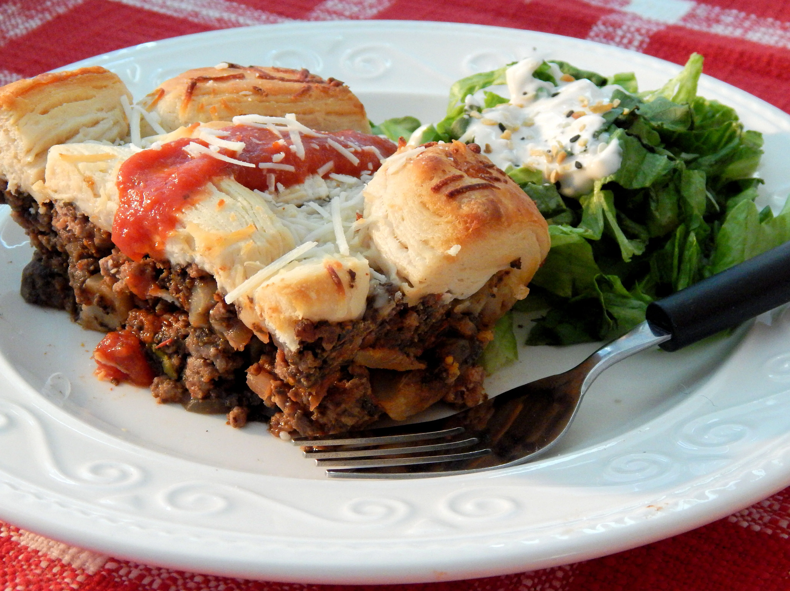

Easy Upside-Down Pizza Casserole

Description
An easy and delicious meal that the enire family will love.
Ingredients
- 1-1/2 pounds lean ground beef
- 1 (15 ounce) can pizza sauce
- 1 (4 ounce) can sliced mushrooms, drained (optional)
- 1/4 sliced pitted ripe olives
- 1 cup shredded mozzarella cheese
- 1 (10 ounce) can refrigerated biscuit dough
Steps
- Preheat the oven to 400 degrees F (200 degrees C).
- Heat a large skillet over medium-high heat. Cook and stir beef in the hot skillet until browned and crumbly, 5 to 7 minutes. Drain and discard grease. Stir in sauce, mushrooms, and olives. Cook and stir until heated through, about 2 minutes more. Transfer mixture to a 2-quart rectangular baking dish. Sprinkle mozzarella cheese on top of the casserole.
- Flatten each biscuit with your hands and arrange on top of the cheese.
- Bake in the preheated oven until biscuits are golden, 15 to 17 minutes.